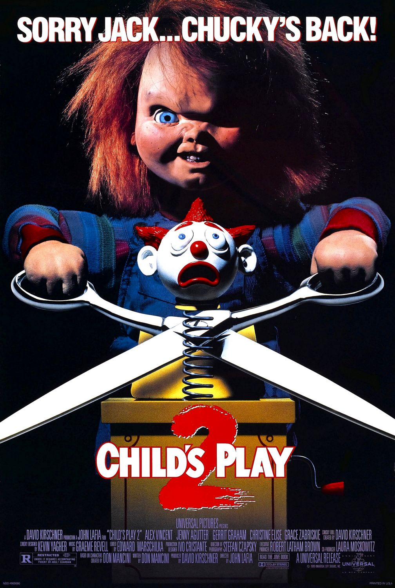
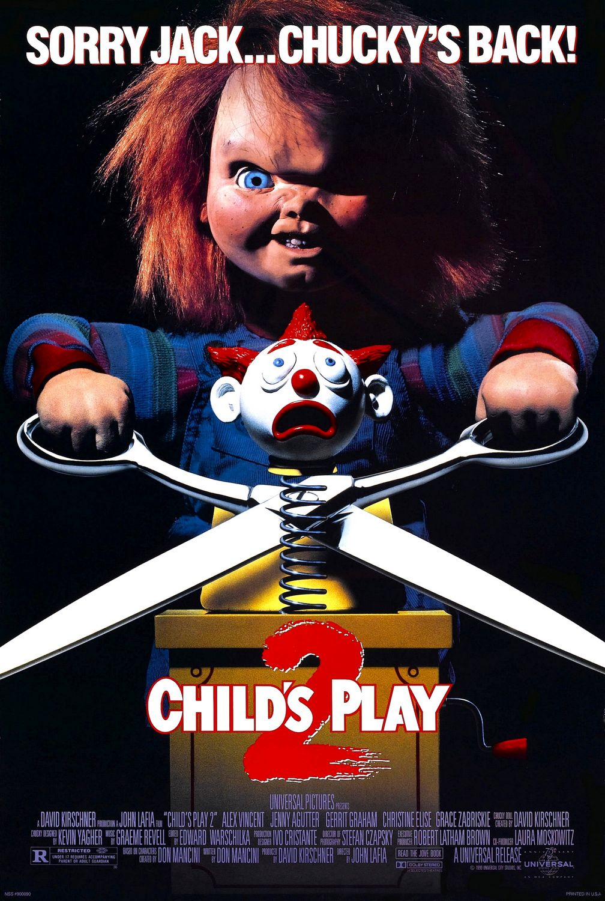

Dapatkan tiket gratis dengan cara menukarkan TGV Point kamu. TGV Point bisa didapatkan setiap kamu bertransaksi di TGV baik di Aplikasi, Website ataupun Kasir (Ticket Box) dengan menggunakan TGV Member. Dimana 1 TGV Point = Rp 1,- , sehingga kamu bisa menukarkan TGV Point sebesar harga produk TGV untuk mendapatkan produk gratis.
Dapatkan fnb gratis dengan cara menukarkan TGV Point kamu. TGV Point bisa didapatkan setiap kamu bertransaksi di TGV baik di Aplikasi, Website ataupun Kasir (Ticket Box) dengan menggunakan TGV Member. Dimana 1 TGV Point = Rp 1,- , sehingga kamu bisa menukarkan TGV Point sebesar harga produk TGV untuk mendapatkan produk gratis.
Setiap TGV Member bisa mendapatkan cashback TGV Point setiap bertransaksi di TGV ataupun online partner. Besaran cashback TGV Point bergantung kepada level member, pastikan Anda selalu transaksi untuk mendapatkan level terbaik.
Dapatkan kesempatan untuk menonton film lebih awal dari tanggal penayangan, pantau terus email serta social media TGV untuk info terkait undangan early screening film.
Dapatkan promo bebas biaya admin untuk transaksi pertama kamu sebagai TGV member dan extra point.
TGV POINT adalah salah satu bentuk apresiasi yang diberikan oleh TGV untuk setiap TGV Member. TGV Point akan didapatkan secara otomatis dari nilai transaksi yang dibayarkan. Besaran 1 TGV Point = Rp 1,- . Point TGV member akan didapatkan 1x24 jam setelah transaksi terjadi atau showtime. TGV Member juga dapat menikmati promo spesial seperti EVENT POINT untuk mendapatkan ekstra TGV Point setiap kali melakukan transaksi selama periode yang telah ditentukan. Jadi yuk segera kumpulkan point kamu
TGV Point yang kamu dapatkan dari penggunaan TGV Member baik kartu ataupun e-card member akan terakumulasi menjadi satu, jadi walaupun kamu memiliki berbagai kartu saat bertransaksi dengan TGV Member, selama terdaftar dalam satu akun email yang sama maka TGV Point akan terakumulasi. Per tanggal 1 Juni 2019, customer hanya bisa mendapatkan TGV point maksimal 1.000.000 pts/hari atau sebanyak 5x transaksi/ hari untuk mendapatkan TGV point. Serta hanya bisa melakukan klaim point H+3 dari tanggal transaksi terjadi.
Kamu bisa menggunakan langsung TGV Point selama point yang kamu miliki cukup untuk di tukarkan dengan harga dari produk tersebut. Kamu dapat menggunakan TGV Point sebagai alat pembayaran baik di website, aplikasi maupun kasir (Ticket Box) TGV. Cukup pilih TGV Point sebagai metode pembayaran dan masukkan 6 (enam) digit PIN saat bertransaksi. Namun jika TGV Point kamu kurang, kamu tidak bisa mengkombinasikan alat pembayaran lainnya. Per tanggal 1 April 2020, customer hanya bisa menggunakan TGV point maksimal 500.000 pts/hari atau sebanyak 10x transaksi/ hari untuk menggunakan TGV point.
TGV Point terbagi menjadi 2 jenis yaitu Point Transaksi dan Event Point. Point transaksi adalah point regular yang didapatkan dari hasil transaksi tiket ataupun fnb di TGV dengan TGV Member. Sedangkan Event Point adalah point yang didapatkan saat program atau event khusus yang TGV selenggarakan.
Untuk POINT TRANSAKSI akan berakhir setiap tahunnya di akhir bulan Maret, sedangkan EVENT POINT akan berakhir selama 3 (tiga) bulan dari point tersebut didapatkan atau sesuai dengan syarat dan ketentuan setiap program.
- Buka website www.tgv.id
- Pilih SIGN UP
- Isi data diri yang dibutuhkan seperti Email, Nomor telepon. tanggal lahir , Password dan PIN. Pastikan nomor HP yang didaftarkan aktif karena akan dikirimkan kode verifikasi oleh sistem CGV.
- Password adalah gabungan huruf dan angka min. 8 karakter. Digunakan saat log in akun cgv member.
- PIN adalah 6 digit angka yang digunakan untuk bertransaksi menggunakan CGV Point
- Nomor Kartu bisa dikosongkan namun jika kamu memiliki kartu CGV member yang telah dibeli di CGV, kamu bisa mengisinya atau menambahkan nanti.
- Silahkan cek email yang telah didaftarkan untuk konfirmasi dan verifikasi
- Akun kamu siap digunakan. Kamu akan otomatis memiliki E-CARD.
- Lakukan pembelian tiket / FNB favorit kamu
- Infokan CGV Member kamu berupa nomor telpon yang didaftarkan / nomor kartu atau e-card cgv member
- Lakukan transaksi sampai selesai dan dapatkan cashback cgv point


 
